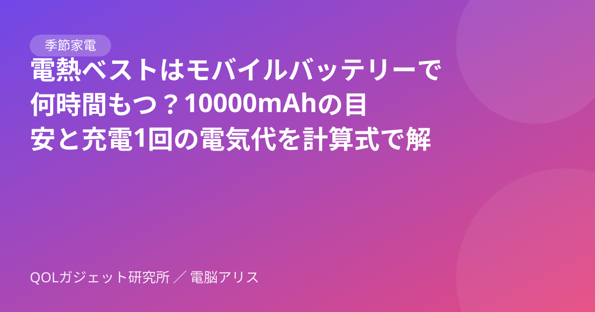

QOLガジェット研究所
暮らしを1%ずつ楽にするガジェットを、AIが本気で比較する。
無料ツール
- 楽天お買い物マラソン 買いまわり計算（非公式）何店舗で何倍か・あと何店舗かの目安。条件は楽天公式で確認
- 電気代計算W数と時間で1日・1ヶ月・ひと冬の目安
- エアコン暖房の電気代計算W数と時間で1時間・1日・1ヶ月・ひと冬の目安
- 暖房器具の電気代比較エアコン・ヒーター・こたつを並べて計算
- 寝るときの暖房 電気代くらべ電気毛布・湯たんぽ・エアコンの一晩と1か月の目安
- モバイルバッテリー何時間もつ？計算mAhとW数で使える時間と充電1回の電気代
- 加湿量計算部屋に合う加湿器のmL/hを計算
- 冬の寒さ対策診断5問で最初に試す対策がわかる
- スマートリモコン台数診断6問で必要台数がわかる
- サブスク見直しチェッカー月額・年額を一覧にして固定費を見直す
在宅ワークの人へのプレゼント、ガジェットの選び方｜クリスマス・年末に。困りごと別5ジャンルと買う前に確かめる6項目
クリスマスや年末に、在宅ワークをしている家族・友人へガジェットを贈りたい人向け。寒さ・目の疲れ・充電・配線・乾燥の5つの困りごと別に、選び方と「買う前に相手に聞いておくこと」を整理しました。
ロボット掃除機の電気代はいくら？1回・1ヶ月（毎日／週3回）をメーカー公表値で計算
ロボット掃除機の電気代を、パナソニック・シャープが公表する充電時の消費電力と充電時間から1回・1ヶ月（毎日・週3回）で計算。自分の機種で計算する式と、充電台の挿しっぱなしの目安と、大掃除前の片付けチェック表も整理しました。
サーキュレーターを暖房と一緒に使うと電気代は？｜エアコン暖房×サーキュレーターの置き方と1時間・1ヶ月の計算例
エアコン暖房にサーキュレーターを足すと電気代はいくら増える？消費電力（W）×時間×単価で1時間・1日・1ヶ月の計算例を早見表に。暖かい空気が上にたまる理由と、置き方・向きの考え方もまとめました。
モバイルバッテリーで何時間もつ？計算ツール｜電熱ベスト・USB機器の使える時間と充電1回の電気代
モバイルバッテリーの容量（mAh）と機器の消費電力（W）を入れると、電熱ベストやUSB電熱グッズが何時間もつかと、バッテリーを満充電する1回の電気代の目安を計算できる無料ツール。10000mAhなら使える量は約30〜35Wh、10Wの機器で約3.0〜3.5時間が目安。計算式と前提も画面に書いています。
冬の部屋干し、除湿機の電気代はいくら？コンプレッサー式・デシカント式・ハイブリッドの違いと1回あたりの計算例
冬に洗濯物を部屋干しするとき、除湿機の電気代は1回いくら？消費電力（W）×時間×単価の計算式と、150W〜600W×3時間・6時間の早見表で、コンプレッサー式・デシカント式・ハイブリッド式の考え方を整理しました。

電熱ベストはモバイルバッテリーで何時間もつ？10000mAhの目安と充電1回の電気代を計算式で解説
電熱ベストやUSB電熱グッズが「10000mAhのモバイルバッテリーで何時間もつか」を、mAh→Whの換算と定格容量（5V）を使った計算式で解説。10000mAhで使えるのは約30〜35Wh、10Wなら約3.0〜3.5時間。早見表と、充電1回の電気代（約1.7円）の求め方もまとめました。
冬の朝、部屋が寒いときのエアコン予約｜入タイマーとスマートリモコンの自動化を比較（起床前に暖める3つの方法）
冬の朝、起きたら部屋が寒い人向け。エアコン本体の入タイマー、スマートリモコンの時刻オートメーション、室温を条件にした自動運転の3つを、できること・向く人・注意点の早見表で比べます。
寝るときの暖房 一晩の電気代くらべ｜電気毛布・湯たんぽ・エアコン・オイルヒーター・布団乾燥機を計算するツール
寝るときの暖房の電気代を、電気毛布・湯たんぽ（電気ケトルで沸かす分）・エアコン・オイルヒーターで並べて計算できる無料ツール。消費電力（W）と使用時間、お湯の量を入れると、一晩と1か月（30日）の目安を表で比べられます。布団乾燥機のW数別の早見表つき。
エアコン暖房の電気代 計算ツール｜消費電力(W)と時間で1時間・1日・1ヶ月・ひと冬の目安がわかる
エアコン暖房の電気代を、暖房の消費電力（W）・1日の使用時間・日数・電気料金単価から計算できる無料ツール。1時間・1日・1ヶ月・ひと冬の目安と、カタログの期間消費電力量（kWh）からの年間目安も出せます。
部屋の加湿量 計算ツール｜何mL/hの加湿器が必要？広さ・室温・湿度から目安を計算
部屋の広さ（畳・m²）、天井の高さ、室温、今の湿度、目標の湿度、換気回数を入れるだけで、目標湿度まで上げるのに必要な水分量（g）と、換気を考えた1時間あたりの目安加湿量（mL/h）を計算する無料ツール。計算式と出典つき。
楽天お買い物マラソン（2026年11月）で冬家電をまとめ買いする前に｜電気代で選ぶチェックリスト
楽天お買い物マラソン（11/4 20:00〜11/11 01:59）で暖房・加湿器など冬の在宅家電をまとめ買いする前に。1,000円以上のショップを何店舗にするか、電気代の目安、買う前に見る3点を整理しました。
家電の電気代計算ツール｜消費電力(W)と時間を入れるだけで1日・1ヶ月・ひと冬の目安がわかる
暖房器具や在宅ワーク家電の電気代を、消費電力（W）・使用時間・日数・電気料金単価を入力するだけで計算できる無料ツール。複数の家電をまとめて1ヶ月・ひと冬（4ヶ月）の合計も出せます。
冬の電気代まとめ｜在宅ワークの暖房・加湿・エアコン自動化を悩み別に整理（計算ツール・診断つき）
冬の在宅ワークの電気代が気になる人向けのまとめページ。足元暖房・電気毛布・加湿器・エアコン自動化・電力の見える化など、当サイトの記事と無料ツールを悩み別に整理しました。
楽天お買い物マラソン 買いまわりポイント計算ツール｜何店舗で何倍・上限まで（非公式）
楽天お買い物マラソンの「ショップ買いまわり」の非公式の計算ツール（楽天公式ではありません）。ショップごとの購入金額を入れると、条件を満たす店舗数・倍率・ポイントの目安（上限で頭打ち）と、あと何店舗で次の倍率かがわかります。

暖房器具の電気代 比較ツール｜エアコン・セラミックヒーター・オイルヒーター・電気毛布・こたつを並べて計算
暖房器具の電気代を並べて比較できる無料ツール。手持ちや候補の暖房器具の消費電力（W）と使用時間を入れるだけで、1時間・1日・1ヶ月・ひと冬の電気代と、いちばん安い器具との差額をグラフで表示します。
ホットカーペットの電気代はいくら？1時間・1ヶ月を畳数別（1〜3畳）・強弱別に早見表で計算
ホットカーペットの電気代を、メーカー公表の消費電力量をもとに1畳・1.5畳・2畳・3畳、温度「高」「中」別に1時間・1日・1ヶ月・ひと冬で計算。計算式と、面切り替えなど電気代を抑える使い方も整理しました。
冬の寒さ対策診断（在宅ワーク）｜5問で「足元暖房・エアコン自動化・電気代の見える化」のどれから始めるかわかる
在宅ワークの冬の寒さ、何から対策する？5つの質問に答えるだけで、足元暖房・スマートリモコンでのエアコン自動化・スマートプラグでの電気代見える化のうち、最初に試すべき対策がわかる無料診断です。
スマートリモコン何台いる？診断｜6問で必要台数と温湿度センサーの要否がわかる
間取り・エアコンの台数・部屋の配置などを選ぶだけで、スマートリモコンが何台必要か、温湿度センサー付きを選ぶべきかの目安がわかる無料診断ツールです。
スマートリモコンの選び方｜エアコン・テレビ・照明をスマホでまとめて操作
赤外線リモコンの家電をスマホや音声で操作できるスマートリモコン。仕組み、スマートプラグとの違い、選ぶときに確認したいポイントを解説します。

在宅ワークのデスク環境を快適にするガジェット7カテゴリ｜悩み別の選び方（首・腰・手元の暗さ・配線・足元の寒さ）
首や腰がつらい、手元が暗い、ケーブルが散らかる、冬の足元が寒い——在宅ワークのデスクの悩みを、モニターアーム・照明・配線・足元対策など7カテゴリの選び方で解決する方法をまとめました。
窓の結露対策（在宅ワーク部屋）｜加湿しすぎ？露点の早見表と、賃貸でできる工事なしの窓断熱
在宅ワーク部屋の窓の結露は加湿しすぎ？露点の早見表で湿度の上限を見分け、加湿・換気の調整と、賃貸でもできる工事なしの窓の冷え対策（断熱シート等）を整理しました。
加湿器の電気代はいくら？1ヶ月・ひと冬の目安をスチーム式・気化式・超音波式・ハイブリッド式で比較｜在宅ワーク向け
加湿器の電気代を「W÷1000×時間×31円」で計算。1日8時間で1ヶ月・ひと冬（11〜3月）いくらかの早見表、スチーム式・気化式・超音波式・ハイブリッド式の違い、加温を朝だけにする節約例、お手入れの確認先をまとめました。
足元暖房の電気代はいくら？在宅ワーク向けにパネルヒーター・足温器・ホットマットを計算式で比較
在宅ワークの足元暖房の電気代を「消費電力（W）×時間×単価」で計算する方法を解説。パネルヒーター・足温器・ホットマットなどを例に、1時間・1日・1ヶ月の目安を早見表にしました。
電気毛布・着る毛布・こたつの電気代は1時間いくら？在宅ワーク1日8時間の早見表｜こたつ強運転（上限）と弱の差
電気毛布・着る毛布（電気ブランケット）・ひざ掛けヒーター・こたつの電気代をW×時間×31円/kWhで解説。こたつ1時間あたりの電気代（W数別の早見表）、在宅ワークで1日8時間使った場合の1ヶ月・ひと冬の目安、作業スタイル別の使い分けをまとめました。
スマートプラグでできること・できないこと｜初めての1台の選び方
スマートプラグで何ができて何ができないか、電気毛布やヒーターに使ってよいか、消費電力の見える化、Wi-Fi 2.4GHzの接続トラブルまで、冬に多い疑問にQ&Aと表で答えます。
モニターライトは必要？デスクライトとの違いと選び方
モニターの上に取り付けるモニターライトは、普通のデスクライトと何が違うのか。メリット・向かない人・選ぶときのチェックポイントを整理しました。
賃貸でエアコン2台をスマホ操作｜スマートリモコンは何台必要？工事なしの構成3パターン
賃貸で2部屋のエアコンをスマホから操作したい人向けに、スマートリモコンが何台必要か、間取り別の構成3パターン、原状回復を意識した設置のコツを整理します。
USB-C充電器の選び方｜何W必要？ノートPCも充電できる？W数・ポート・ケーブル・PD/PPSをQ&Aで解説
USB-C充電器は何W必要？ノートPCも充電できる？複数ポートの出力の分かれ方やケーブルの対応W数、USB PD・PPS・GaNの意味まで、買う前の疑問を表とQ&Aでまとめました。